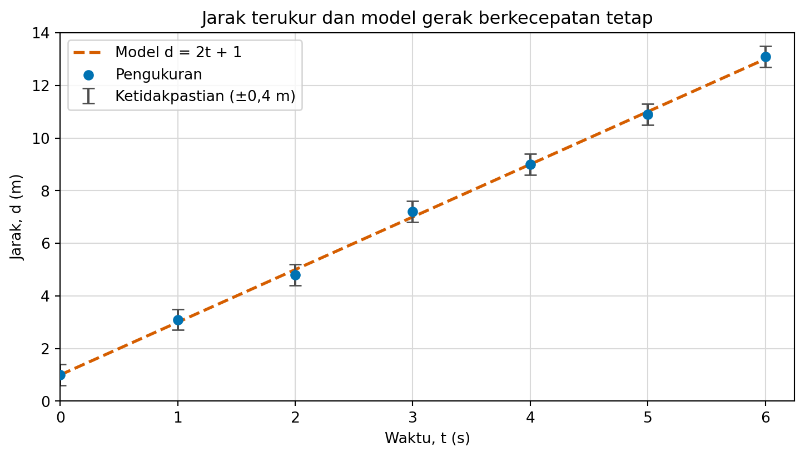

fig_u04_lab
Setelah menyelesaikan unit ini, pembaca dapat:
fig dan ax, kemudian plot, scatter, serta errorbar;Prasyarat lokal: Unit 1, koordinat Kartesius, persamaan garis lurus, rasio, dan interval pada tingkat A30. Unit ini tidak memerlukan kalkulus.
Grafik bukan hiasan yang ditambahkan setelah perhitungan selesai. Grafik adalah argumen terstruktur tentang data. Sebelum memilih warna atau jenis garis, nyatakan pertanyaannya.
Dalam unit ini pertanyaannya adalah:
Apakah tujuh pengukuran jarak konsisten dengan model , jika setiap pengukuran mempunyai ketidakpastian meter?
Data yang digunakan sengaja kecil agar setiap tanda pada grafik dapat dicocokkan dengan tabel.
| Waktu (s) | Jarak terukur (m) | Ketidakpastian (m) | Nilai model (m) |
|---|---|---|---|
| 0 | 1,0 | 0,4 | 1,0 |
| 1 | 3,1 | 0,4 | 3,0 |
| 2 | 4,8 | 0,4 | 5,0 |
| 3 | 7,2 | 0,4 | 7,0 |
| 4 | 9,0 | 0,4 | 9,0 |
| 5 | 10,9 | 0,4 | 11,0 |
| 6 | 13,1 | 0,4 | 13,0 |
Karena pertanyaannya membandingkan pengukuran dengan model, grafik harus menampilkan keduanya. Menampilkan hanya garis model akan menghapus bukti pengukuran; menampilkan hanya titik akan menyembunyikan objek pembanding.
Setiap unsur visual harus mempunyai arti yang dapat dituliskan tanpa melihat gambar.
| Unsur visual | Makna |
|---|---|
| posisi mendatar | waktu , dalam detik |
| posisi tegak | jarak , dalam meter |
| titik lingkaran | nilai pengukuran |
| batang vertikal | interval pengukuran meter |
| garis putus-putus | nilai model |
Warna membantu membedakan unsur, tetapi tidak boleh menjadi satu-satunya pengodean. Titik berbentuk lingkaran dan garis putus-putus tetap dapat dibedakan pada cetakan abu-abu atau oleh pembaca yang tidak membedakan warna tertentu.
Pilih pengodean yang sesuai dengan pertanyaan. Posisi pada sumbu berskala berguna untuk membandingkan besaran. Diagram lingkaran tidak sesuai di sini: jarak pada waktu berbeda bukan bagian-bagian dari satu keseluruhan.
fig dan ax ke grafik lengkapMatplotlib memisahkan gambar keseluruhan (fig) dari daerah koordinat (ax). fig mengatur kanvas yang akan disimpan. ax menerima data, skala, label, dan legenda. Pemisahan ini membuat setiap keputusan terlihat dan dapat diuji. Lab berikut dimulai dari kanvas kosong, lalu menambahkan tepat satu lapisan pada setiap tahap.
fig dan axfrom matplotlib import pyplot as plt
from source.code.unit04_visualization import ALT_TEXT, OBSERVATIONS
fig_u04_lab, ax_u04_lab = plt.subplots(figsize=(8.0, 4.8))Nama variabel dapat berbeda, tetapi pola fig, ax = plt.subplots(...) layak dipertahankan: pembaca kode langsung tahu objek mana yang disimpan dan objek mana yang menerima pengodean data. Ukuran gambar ditetapkan agar tidak bergantung pada ukuran jendela interaktif.
Siapkan empat barisan data dari tabel. Daftar dibuat dalam urutan pengamatan yang sudah divalidasi.
waktu_u04 = [baris.time_s for baris in OBSERVATIONS]
jarak_u04 = [baris.measured_distance_m for baris in OBSERVATIONS]
galat_u04 = [baris.uncertainty_m for baris in OBSERVATIONS]
model_u04 = [baris.model_distance_m for baris in OBSERVATIONS]plot untuk modelax.plot cocok untuk nilai model yang urut menurut waktu. Garis putus-putus menjadi pengodean kedua selain warna.
garis_model_u04, = ax_u04_lab.plot(
waktu_u04,
model_u04,
color="#D55E00",
linestyle="--",
linewidth=2,
label="Model d = 2t + 1",
)
assert garis_model_u04.get_linestyle() == "--"Koma pada garis_model_u04, = ... membongkar daftar satu garis yang dikembalikan plot. Pada tahap ini belum ada titik pengukuran dan belum ada batang ketidakpastian.
scatter untuk pengukuranax.scatter menambahkan tujuh pengukuran sebagai tanda terpisah. Bentuk lingkaran membuat seri tetap dikenali tanpa warna.
titik_u04 = ax_u04_lab.scatter(
waktu_u04,
jarak_u04,
marker="o",
s=36,
color="#0072B2",
label="Pengukuran",
zorder=3,
)
assert len(titik_u04.get_offsets()) == 7errorbar untuk ketidakpastianBatang ketidakpastian merupakan lapisan tersendiri. fmt="none" mencegah errorbar menggambar titik kedua di atas hasil scatter.
batang_u04 = ax_u04_lab.errorbar(
waktu_u04,
jarak_u04,
yerr=galat_u04,
fmt="none",
capsize=4,
ecolor="#4D4D4D",
label="Ketidakpastian (±0,4 m)",
zorder=2,
)
assert batang_u04.has_yerrNilai yerr menyatakan simpangan vertikal dari setiap titik. Arti statistiknya tidak berasal dari nama metode; arti tetap harus dinyatakan oleh prosedur pengukuran.
Data kini terlihat, tetapi grafik belum dapat ditafsirkan tanpa satuan, rentang, dan kunci pengodean.
ax_u04_lab.set_title("Jarak terukur dan model gerak berkecepatan tetap")
ax_u04_lab.set_xlabel("Waktu, t (s)")
ax_u04_lab.set_ylabel("Jarak, d (m)")
ax_u04_lab.set_xlim(0, 6.25)
ax_u04_lab.set_ylim(0, 14)
ax_u04_lab.set_xticks(waktu_u04)
ax_u04_lab.set_yticks(range(0, 15, 2))
ax_u04_lab.grid(True, color="#D9D9D9", linewidth=0.8)
ax_u04_lab.set_axisbelow(True)
legenda_u04 = ax_u04_lab.legend(loc="upper left", frameon=True)
fig_u04_lab.subplots_adjust(left=0.11, right=0.97, bottom=0.15, top=0.87)
assert "(s)" in ax_u04_lab.get_xlabel()
assert "(m)" in ax_u04_lab.get_ylabel()
assert len(legenda_u04.get_texts()) == 3Gambar statis memerlukan deskripsi yang menyatakan pertanyaan, sumbu, tanda, pola, dan batas kesimpulan. Quarto memasangkan deskripsi berikut dengan gambar lab. Deskripsi yang sama tersedia dalam konstanta ALT_TEXT dan ditulis ke artefak teks oleh skrip Unit 4.
fig_u04_lab
Memanggil savefig tanpa menetapkan ukuran, metadata, jenis huruf, dan garam SVG dapat menghasilkan byte berbeda. Fungsi write_artifacts menetapkan semua itu, menyimpan data dan deskripsi bersama gambar, lalu mengikat ketiganya dalam manifes SHA-256. Tutup kanvas lab setelah selesai agar proses panjang tidak menumpuk gambar di memori.
plt.close(fig_u04_lab)Label Waktu, t (s) menyatakan nama variabel, lambang, dan satuan. Label Jarak, d (m) melakukan hal yang sama. Angka tanpa satuan tidak cukup ketika besaran fisis sedang dibandingkan.
Sumbu tegak pada gambar Unit 4 dimulai dari nol. Keputusan ini membuat tinggi visual sebanding dengan jarak yang dinyatakan. Memulai dari nol bukan aturan mutlak untuk semua grafik garis, tetapi pemotongan harus terlihat jelas dan tidak boleh dipakai untuk membesar-besarkan selisih.
Misalkan dua batang menyatakan 98 dan 100. Dengan garis dasar nol, rasio tingginya adalah
Jika garis dasar disembunyikan pada 97, rasionya menjadi
Selisih datanya tetap 2, tetapi batang kedua tampak tiga kali setinggi batang pertama. Pemotongan tersebut dapat berguna untuk melihat perubahan kecil, namun garis dasar dan nilai sebenarnya harus dinyatakan dengan terang.
Rasio aspek adalah perbandingan lebar dan tinggi daerah gambar. Grafik yang sangat sempit dapat membuat garis yang sama tampak curam; grafik yang sangat lebar dapat membuatnya tampak datar. Kemiringan matematis model tetap
apa pun ukuran gambar di layar. Karena itu, baca nilai sumbu dan satuannya, bukan sudut piksel semata. Skrip unit menetapkan ukuran gambar dan batas sumbu secara eksplisit agar hasil tidak berubah mengikuti ukuran jendela.
Pada contoh ini, batang galat berarti interval toleransi pengukuran meter. Batang itu bukan otomatis simpangan baku, interval kepercayaan, atau rentang semua nilai yang mungkin. Makna tersebut baru sah jika prosedur pengukuran atau model statistik menetapkannya.
Semua nilai model berada di dalam interval pengukuran. Pernyataan yang sah adalah “data ini konsisten dengan model pada tujuh waktu yang diperiksa.” Pernyataan yang terlalu kuat adalah “data membuktikan bahwa model selalu benar.” Model lain juga mungkin cocok dengan tujuh interval yang sama.
Ketika membandingkan dua seri, gunakan definisi ketidakpastian yang sama atau jelaskan perbedaannya. Batang dengan makna berbeda tidak boleh dibandingkan seolah-olah identik.
Teks alternatif yang berguna tidak sekadar berkata “grafik garis”. Ia memuat:
Skrip Unit 4 menanamkan judul dan deskripsi ke metadata SVG serta menulis deskripsi yang sama sebagai unit04-alt.txt. Data tetap tersedia sebagai CSV, sehingga pembaca tidak dipaksa memperoleh nilai dari posisi visual saja.
Legenda, bentuk, dan jenis garis juga mengulang informasi warna. Pengulangan semacam ini bukan pemborosan: ia membuat informasi dapat diakses melalui lebih dari satu petunjuk.
Jalankan dari akar proyek:
python source/code/unit04_visualization.py --output-dir output/unit04Perintah itu menghasilkan empat berkas:
unit04-data.csv: data bertabel dengan satuan pada nama kolom;unit04-figure.svg: gambar vektor dengan skala dan metadata tetap;unit04-alt.txt: deskripsi visual dalam teks biasa; danunit04-manifest.json: pertanyaan, kebijakan sumbu, makna pengodean, batas klaim, serta SHA-256 ketiga artefak lainnya.Skrip tidak memakai jaringan, waktu saat ini, atau bilangan acak. Urutan data, format angka, jenis huruf, ukuran gambar, garam pengenal SVG, dan metadata ditetapkan. Pada lingkungan perangkat lunak yang sama, dua eksekusi harus menghasilkan byte yang sama.
Deterministik tidak berarti benar. Kesalahan yang ditulis secara deterministik tetap merupakan kesalahan. Hash membantu memastikan bahwa dua orang memeriksa byte yang sama; tes dan penalaran memeriksa apakah byte itu mewakili maksud yang benar.
Gambar dapat menunjukkan pola, anomali, dan calon contoh penyangkal. Ia sangat berguna untuk mengajukan pertanyaan berikutnya. Akan tetapi, tujuh titik tidak membuktikan persamaan bagi semua waktu.
Jika gerak didefinisikan mempunyai posisi awal 1 meter dan kecepatan tetap 2 meter per detik, maka persamaan
mengikuti definisi gerak berkecepatan tetap. Itu adalah argumen model. Grafik kemudian memeriksa apakah pengukuran terbatas konsisten dengan konsekuensi model tersebut.
Sebaliknya, satu pengamatan yang intervalnya tidak memuat nilai model dapat menjadi bukti bahwa model, ketidakpastian, data, atau implementasi perlu diperiksa. Ia tidak secara otomatis mengatakan bagian mana yang salah.
Seorang teman membuat grafik tujuh pengukuran tetapi tidak menampilkan garis model. Sebutkan informasi yang hilang dan satu perbaikan yang tidak hanya mengandalkan warna.
Kembali ke pertanyaan utama: dua objek apa yang sedang dibandingkan?
Grafik kehilangan nilai pembanding , sehingga pembaca tidak dapat menilai konsistensi pengukuran terhadap model secara langsung. Tambahkan garis model putus-putus dengan label pada legenda atau label langsung. Jenis garis yang berbeda membuatnya tetap dapat dibedakan tanpa bergantung pada warna.
Dua nilai adalah 98 dan 100. Hitung rasio tinggi tampaknya untuk garis dasar 0 dan 97. Jelaskan mengapa judul “nilai kedua tiga kali lebih besar” tidak sah.
Tinggi tampak adalah nilai dikurangi garis dasar; besar data tetap nilai asli.
Dengan garis dasar 0, rasionya . Dengan garis dasar 97, rasio tinggi tampak adalah . Akan tetapi, nilai kedua hanya kali nilai pertama, bukan tiga kali. Angka 3 menggambarkan geometri gambar yang dipotong, bukan rasio data.
Apakah batang meter pada unit ini merupakan interval kepercayaan 95%? Tuliskan pernyataan yang sah tentang batang tersebut.
Gunakan hanya definisi ketidakpastian yang benar-benar diberikan.
Tidak ada dasar untuk menyebutnya interval kepercayaan 95%. Unit hanya mendefinisikannya sebagai toleransi pengukuran dari sampai meter. Pernyataan yang sah: pada ketujuh waktu, nilai model berada di dalam interval toleransi yang dinyatakan.
Tuliskan teks alternatif dua atau tiga kalimat untuk grafik Unit 4. Jangan sekadar mengulang judul.
Sebutkan sumbu, pengodean, pola, ketidakpastian, dan batas klaim.
Contoh: “Grafik membandingkan jarak terukur dalam meter terhadap waktu 0–6 detik dengan model . Titik lingkaran dan batang meter mewakili pengukuran, sedangkan garis putus-putus mewakili model; semua nilai model berada di dalam interval pengukuran. Kecocokan tujuh titik mendukung konsistensi pada data ini, bukan bukti bahwa model berlaku untuk semua waktu.”
Grafik menunjukkan 1.000 titik tepat pada kurva . Apakah hal itu membuktikan bahwa program selalu menghitung kuadrat dengan benar? Berikan satu langkah komputasional dan satu langkah matematis yang memperkuat pemeriksaan.
Gambar hanya memuat masukan berhingga dan resolusi visual terbatas.
Tidak. Seribu titik hanya memeriksa masukan yang dipilih, dan perbedaan kecil dapat tersembunyi oleh resolusi gambar. Langkah komputasional: uji nilai batas, nilai negatif, dan masukan acak deterministik dengan membandingkan keluaran numerik terhadap hasil eksak. Langkah matematis: periksa definisi algoritme dan tunjukkan bahwa operasi yang diterapkan pada setiap masukan memang menghasilkan pada domain yang dinyatakan.
Jalankan write_artifacts pada direktori baru. Buktikan dengan kode bahwa alur tersebut menghasilkan data CSV, gambar SVG statis, deskripsi teks, dan manifes JSON; bahwa manifes memuat satuan serta deskripsi aksesibel; dan bahwa hash ketiga artefak yang dicatat manifes cocok dengan byte sebenarnya.
Gunakan paths = write_artifacts(direktori), baca JSON dengan json.loads, lalu hitung hashlib.sha256(paths[kunci].read_bytes()).hexdigest() untuk data, figure, dan alt_text.
Kode berikut harus selesai tanpa AssertionError. Direktori sementara menjaga pemeriksaan agar tidak mengubah artefak rilis.
import hashlib
import json
from pathlib import Path
import tempfile
from source.code.unit04_visualization import ALT_TEXT, write_artifacts
with tempfile.TemporaryDirectory() as tmp_u04:
paths_u04 = write_artifacts(Path(tmp_u04))
manifest_u04 = json.loads(paths_u04["manifest"].read_text(encoding="utf-8"))
assert set(paths_u04) == {"data", "figure", "alt_text", "manifest"}
assert manifest_u04["units"] == {
"distance": "m",
"time": "s",
"uncertainty": "m",
}
assert manifest_u04["accessibility"]["description"] == ALT_TEXT
for kunci_u04 in ("data", "figure", "alt_text"):
digest_u04 = hashlib.sha256(paths_u04[kunci_u04].read_bytes()).hexdigest()
assert manifest_u04["artifacts"][paths_u04[kunci_u04].name] == digest_u04Pemecahan 7.1.
import hashlib
import json
from pathlib import Path
import tempfile
from source.code.unit04_visualization import ALT_TEXT, write_artifacts
with tempfile.TemporaryDirectory() as direktori_u04:
artefak_u04 = write_artifacts(Path(direktori_u04))
manifes_u04 = json.loads(
artefak_u04["manifest"].read_text(encoding="utf-8")
)
assert artefak_u04["data"].suffix == ".csv"
assert artefak_u04["figure"].suffix == ".svg"
assert artefak_u04["alt_text"].read_text(encoding="utf-8").strip() == ALT_TEXT
assert manifes_u04["accessibility"]["svg_metadata"] is True
assert manifes_u04["construction"][-1] == "deterministic_save"
for nama_u04 in ("data", "figure", "alt_text"):
byte_u04 = artefak_u04[nama_u04].read_bytes()
hash_u04 = hashlib.sha256(byte_u04).hexdigest()
assert manifes_u04["artifacts"][artefak_u04[nama_u04].name] == hash_u04CSV mempertahankan nilai dan satuan, SVG memberi keluaran statis, teks alternatif menyediakan jalur nonvisual, dan manifes mengikat byte ketiganya. Kecocokan hash membuktikan identitas byte, bukan kebenaran model.
fig, ax, plot, scatter, dan errorbar membuat pengodean, satuan, legenda, serta penyimpanan dapat diuji terpisah.